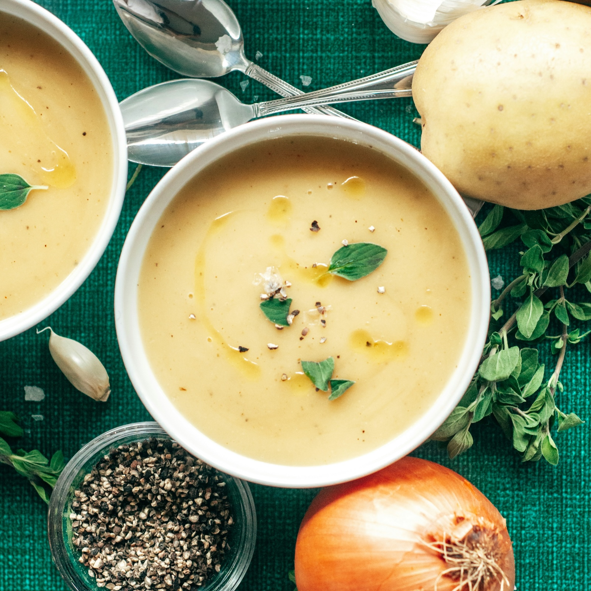

Back to home
Potato and Leek Soup

Description
Potato and Leek Soup is a classic soup that is made with potatoes and leeks. It's a simple dish that is easy to make and tastes great.
Ingredients
- 5 medium-sized potatoes, peeled and chopped
- 2 leeks, finely chopped
- 1 onion, finely chopped
- 1 bay leaf
- 1 tsp of salt
- 1 tsp of pepper
- 1 tsp of thyme
- 1 tbsp of olive oil
- 1 litre of chicken broth
- 2 dl of cream
Steps
- In a large pot, heat the olive oil over medium-high heat. Add the onion, leeks, and garlic and cook until the onion is translucent.
- Add the potatoes, bay leaf, salt, pepper, and thyme and cook until the potatoes are softened.
- Add the chicken broth and cook until the soup is heated through.
- Add the cream and cook until the soup is heated through.
- Serve the soup with some bread and butter.